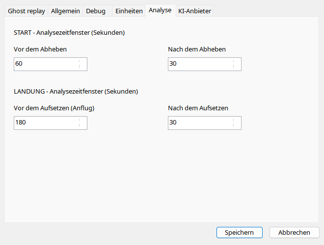

Vier Felder bestimmen Sekunden vor/nach Abheben und Aufsetzen unabhängig. Größere Fenster zeigen mehr Kontext, erhöhen aber Eingaben und können Modellgrenzen überschreiten. Dateigrenzen bleiben verbindlich. Neue Berichte nutzen neue Werte; gespeicherte Berichte ändern sich nicht automatisch.
| Option / Aktion | Verhalten und Einschränkungen |
|---|---|
| Vor Start | Standard 60 s, Bereich 1–300 vor Liftoff. Mehr Kontext zeigt ggf. Startlauf, erhöht Datenmenge. |
| Nach Start | Standard 30 s, 1–300; Anfangssteigflug, nicht Gesamtleistung. |
| Vor Landung | Standard 180 s, 1–300; fehlende Anflugsamples kommen nicht zurück. |
| Nach Landung | Standard 30 s, 1–300; Ausrollen/weitere Kontakte. |
| Grenzen | Aufnahmegrenzen, Modellkontext und Timeout beschränken effektive Eingabe. |
